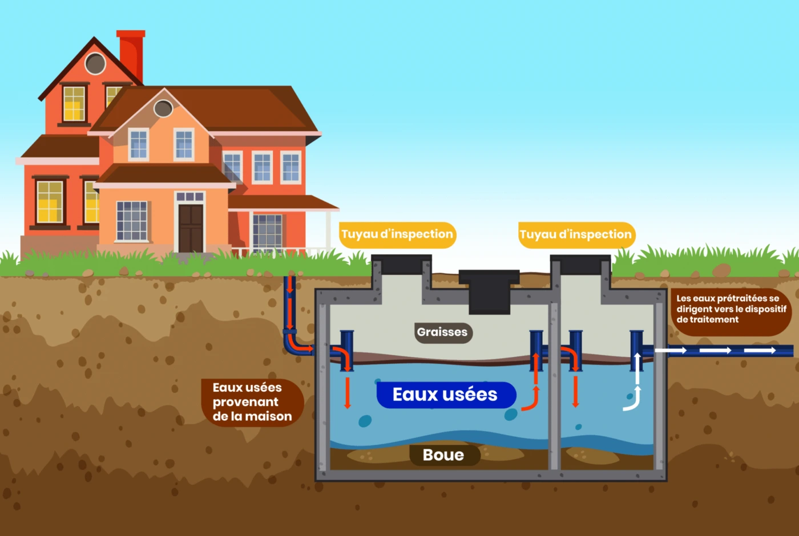

Installation fosses septiques
L'installation de fosse septique, c'est quoi ?
L'installation d'une fosse septique consiste à poser un système autonome de traitement des eaux usées pour les maisons non raccordées au tout-à-l'égout. Ce système permet de traiter et d'éliminer les déchets domestiques avant de rejeter l'eau traitée dans le sol. Une fosse septique bien installée garantit une gestion efficace des eaux usées et protège l'environnement. L'installation nécessite un respect des normes sanitaires et environnementales. Nous intervenons dans tout le département de la Seine-Saint-Denis (93) pour réaliser l'installation de votre fosse septique.
Quand installer une fosse septique ?
Il est nécessaire d'installer une fosse septique lors de la construction d'une maison non raccordée au réseau public d'assainissement. L'installation doit également être envisagée lors d'une rénovation importante, lorsque les systèmes d'assainissement existants ne sont plus conformes ou en mauvais état. L'installation d'une fosse septique est également indispensable si votre terrain ne permet pas un raccordement au tout-à-l'égout. Pour un service d'installation de qualité, nous intervenons dans toute la Seine-Saint-Denis (93), en respectant les réglementations en vigueur.
Prix installation de fosse septique
Le prix de l'installation d'une fosse septique dépend de plusieurs facteurs, tels que la taille de la fosse, le type de système choisi (fosse septique classique ou fosse toutes eaux), ainsi que les contraintes techniques liées au terrain . Pour obtenir une estimation précise du coût, il est recommandé de demander un appareil personnalisé. Nous intervenons dans toute la Seine-Saint-Denis (93) pour l'installation de fosses septiques. Contactez-nous dès maintenant pour obtenir un devis gratuit et adapté à vos besoins. Vous pouvez nous joindre au 06 58 44 42 71 ou via notre formulaire de devis gratuit.